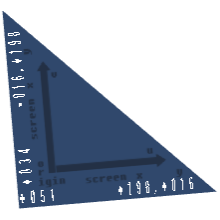

Alexandr Poltavsky
Software Developer
Location: Russia, Moscow
poltavsky.alexandr@gmail.com
Blog
Github
Shadertoy
Twitter
Shader Tricks: Retrieving Triangle Location and Edges in Pixel Shader and More
In this post I'm going to talk about:
Triangle Info

Every once in while there is a need to get full info about the rasterized primitive in a pixel shader: location in screen space and edge vectors. And it's an easy thing with the help of barycentrics. Check out a blog post I made on them with a Javascript interactive demo.
So the first step is to take partial derivatives (I use GLSL syntax but it's easy to translate to HLSL):
vec2 uvdx = dFdx( uv );
vec2 uvdy = dFdy( uv );
mat2 scr2uv = mat2( uvdx, uvdy );
uv - is interpolated barycentrics, uvdx and uvdy form a 2x2 matrix that takes from screen space to barycentric space. Taking the inverse of that matrix produces a matrix that transforms uv coordinates to screen space. Because a uv of [1,0] is one edge of the triangle and [0,1] is another, this inverse matrix has as its columns (or rows, depending on your math) the edge vectors.
float D = 1.0 / ( uvdx.x*uvdy.y - uvdx.y*uvdy.x );
vec2 xydu = vec2( uvdy.y, -uvdx.y ) * D;
vec2 xydv = vec2( -uvdy.x, uvdx.x ) * D;
mat2 uv2scr = mat2( xydu, xydv );
//starting with OpenGL 3.1 (GLSL 1.4) there is inverse(...) intrinsic
Okay. The first step is done. Now we need to find the location of uv=[0,0] on screen. Remember that uv is an interpolated barycentric, so we can use the above uv2scr to find the screen space position of the shaded fragment within the primitive. Then we subtract that from the global screen space fragment position (gl_FragCoord or SV_POSITION) to get the desired result:
vec2 pos_tri = gl_FragCoord.xy - uv2scr*uv;
Below is a WebGL demonstration. On the sides of the triangle are screen dimensions of its edges together with screen position of the origin point. Three digits are printed so make sure your browser window is reasonable in size. Most of the code in pixel shader is for outputting the text in the right place. To pause rotation just hit space bar.

Click to show WebGL demo
Click to show WebGL demo
Retrieving tri info is helpful in DFAA antialiasing: the edge vectors are used to determine sampling direction.
Non-perspective interpolation in WebGL
In WebGL (both 1 and 2) there is no noperspective qualifier and that's a problem because our barycentric coordinates need to be interpolated in screen space linearly. No worries, it can be done by hand: we need to multiply by gl_Position.w in the vertex shader and then divide by 1\gl_FragCoord.w in the pixel shader (if the z is constant then we don't need to do anything). This effectively has the same effect as noperspective interpolation.
Using partial derivatives for peeking into another shader
Derivatives can be exploited to peek into what's happening in a neighbor fragment.
float value;
float value_in_right_fragment = value + dFdx( value );
float value_in_up_fragment = value + dFdy( value );
//up in OpenGL, down in DirectX
While this looks alluring it has a number of problems. First, it's limited to right and up fragments. Second, derivatives are calculated for a quad of fragments ( 2x2 ), so it essentially halves the resolution. If you have linear data then it is all, obviously, no problem. Another problem we have to check for out-of-primitive fragments and it can be done with barycentrics (by checking for u>=0, v>=0, u+v <=1 in neighbor fragments).